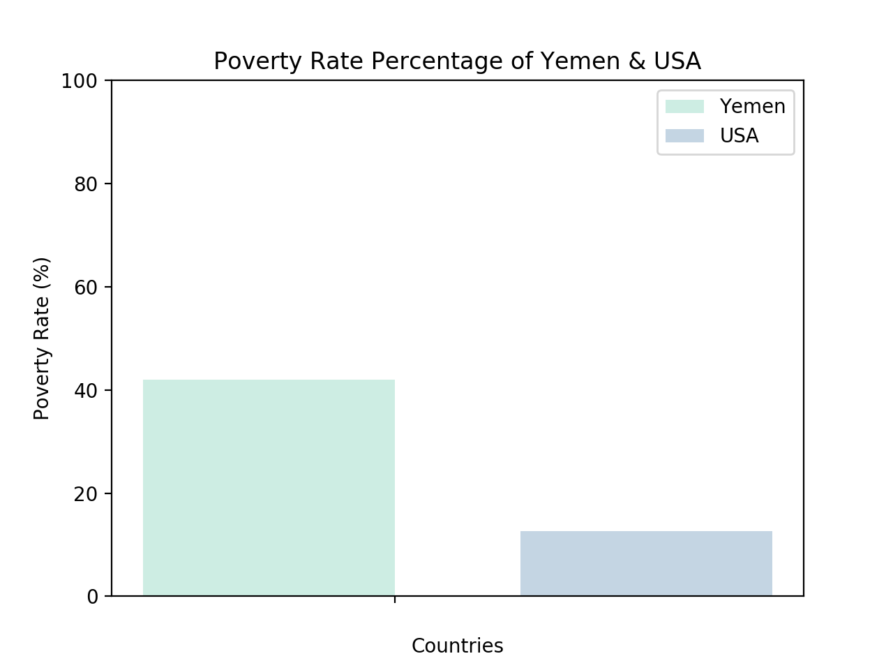
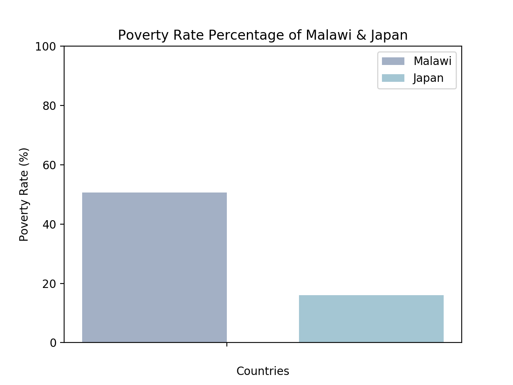
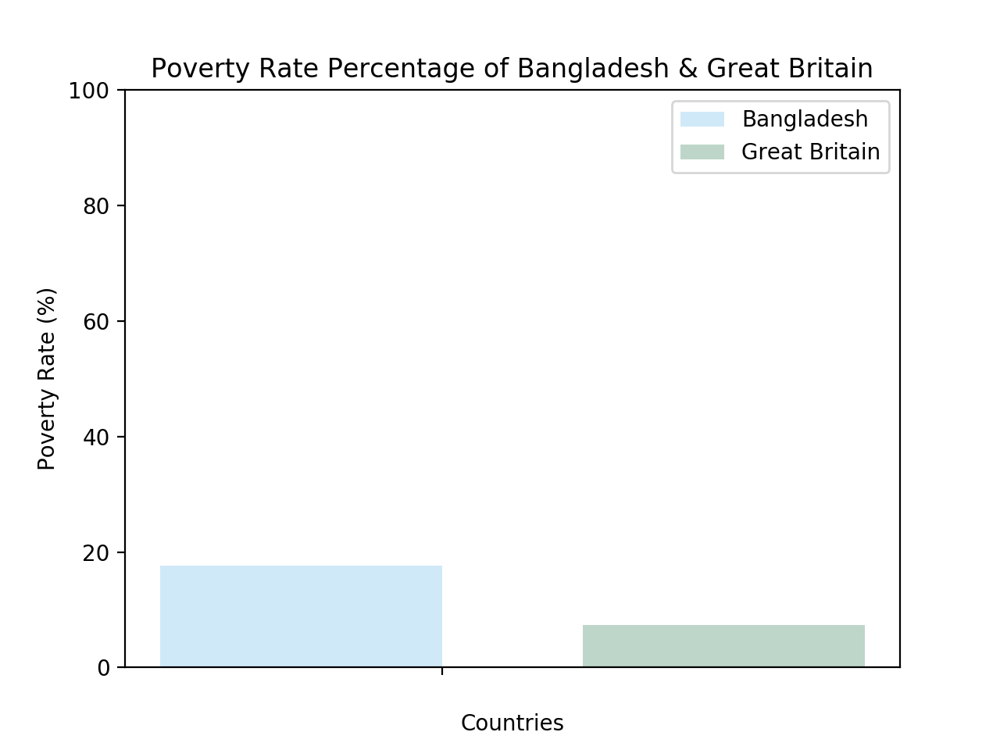
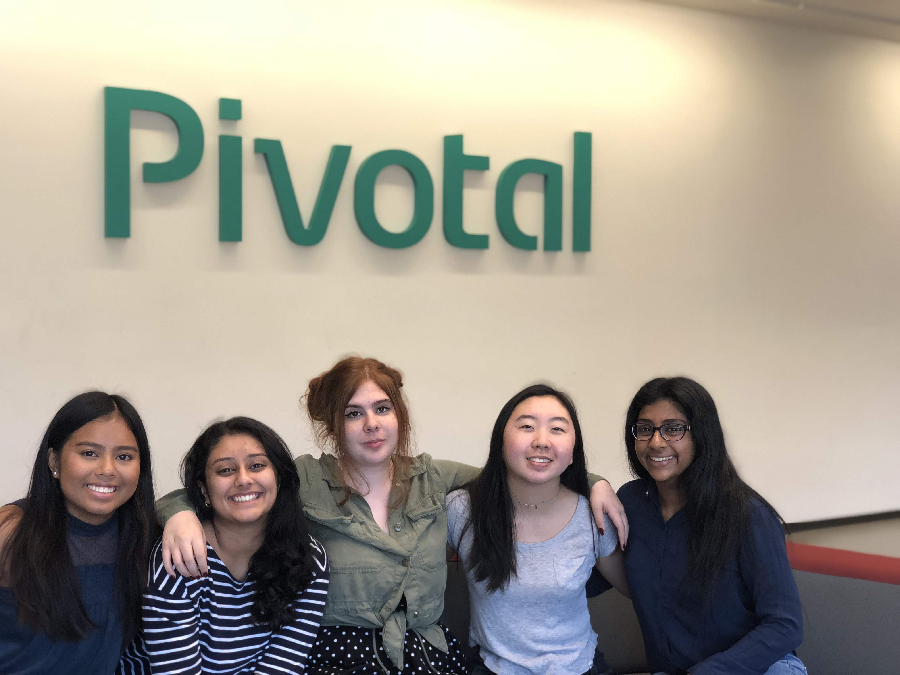

Living in the United States, despite our varying races and genders, we are constantly bombarded by aspects and events in our lives. These aspects can be easily circumnavigated after being aided by our privilege. However, often times, we are not even aware of this privilege that we constantly wield as if it is our right. This game aims to educate our audiences on these privileges. We also aim to raise awareness on the living conditions of many families, especially young girls, in third world countries. We also will link to charities and organizations that will allow users to donate.
STATS
Population: 325.7 million
Percent in Poverty: 12.7%
Average Annual Income: $56,516
Average Daily Income: $211.36
The United States is generally accepted as a First World Country. However, despite that moniker, the poverty rate in the US is a staggering 12.7%, ergo, 41.36 million people are living in poverty in America today. In addition, although it does not seem to be a prevalent problem, water access is surprisingly difficult for many Americans. According to the Environmental Finance Center, “Many individuals living in or around some of the wealthiest jurisdictions in the United States, with some of the most sophisticated drinking water and wastewater systems and infrastructure, suffer from significant access challenges as well.” Although, for many, the name, The United States of America, has become a symbol of power, it is important to acknowledge the difficulties of many people living there today.
Population: 25.4 million
Percent in Poverty: 42%
Average Annual Income: $725
Average Daily Income: $1.80
Yemen, an Arab sovereign state in Western Asia at the southern end of the Arabian Peninsula, is mostly an arid, flat, coastal plain. Around 10.67 million people live under the poverty line. To make matters worse, during the day, temperatures can skyrocket and then plummet at night. According to UNICEF, “In one of the world’s most water-scarce countries, the conflict in Yemen has made matters worse, particularly for children who depend on clean drinking water and adequate sanitation for good health and survival...19.3 million Yemenis do not have access to clean water and sanitation. Of these, 50% have been directly cut off from these basics of life by the conflict.”

Population: 127 million
Percent in Poverty: 16%
Average Annual Income: $28,641
Average Daily Income: $74.86
Japan, regarded by many as a powerhouse in the Asian economy, has a 16% percent poverty rate. This means that 20.32 million people live in poverty in Japan. Despite their reputation as a clean, minimalistic, high tech society, many people living in poverty do not have access to Japan’s tech. This is a much worse situation to be in in Japan rather than any other country because most of Japan’s entire society revolves around technology. Without access to such technologies it can be incredibly difficult to integrate into society in Japan. Despite Japan’s reputation as a highly industrial nation, it is vital to not categorize japanese people as all highly successful entrepreneurs and be mindful of the struggles of many people who live there.
Population: 18.09 million
Percent in Poverty: 50.7%
Percent in Extreme Poverty: 25%
Average Annual Income: $250
Average Daily Income: $0.68
Malawi, a small country located on the continent of Africa, is currently the 3rd poorest country in the world. Around 50.7% of people are living under the poverty line, hence, about 9.17 million people make under $1.90, the international poverty line. In addition, around 25%, or 4.65 million people, live in extreme poverty which means living under an income of $1.25 daily. Nevertheless, according to UNICEF, “Malawi has made significant progress in increasing access to safe water and sanitation. According to the 2006 MICS report, access to safe water is at 74%, access to improved sanitation is at 47%, while access to basic sanitation which includes traditional latrines is as high as 88%. However, good hygiene practices are rather low with only 37% of the population practising better hygiene”.

Population: 65.64 million
Percent in Poverty: 7.3%
Average Annual Income: $35,492.25
Average Daily Income: $97.28
Great Britain is arguably one of the most industrially advanced countries and boasts an impressive repertoire concerning technology growth. However, despite all these advancements, about 7.3% of the population lives in poverty and does not have access to such progress. That means around 4.8 million people are, to some extent, disconnected from a society that is growing increasingly technology dependent. Nevertheless, Great Britain possesses one of the highest water accessibility percentages in the world. Around 100% of the urban population can access clean, sanitary water and 98% of the rural population can claim water clean enough to safely drink. It is important to acknowledge that even the most privileged countries, such as Great Britain, have unseen poverty.
Population: 163 million
Percent in Poverty: 17.6%
Average Annual Income: $13,258
Average Daily Income: $36.82
Bangladesh, a small country located in south Asia, has a poverty percentage of 17.6%. This means 28.7 million people live under the international poverty line today. In addition, according to The Water Project, “ 97% of the people of Bangladesh have access to water and only 40% percent have proper sanitation. With a staggering 60% of the population that has to endure unsafe drinking water, the nation is in danger.”

GAME
Game Designer
Lea Albano is an incoming senior at James Logan High School in Union City, CA. She is interested in software engineering, business, and math. She joined Girls Who Code with a foundation in computer science and further cultivated her passion for this field through this program. She loves watching nature documentaries and is passionate about animal and plant conservation.With this project she hopes to educate her peers about the privilege of living in the United States and become aware of their usage and wastage of precious natural resources.
Game Engineer
Natalie Curiel is an incoming junior in Sonoma County. Although she has just begun her journey beyond schooling, Natalie shows incredible promise as an aspiring artist and graphic designer. She joined Girls Who Code with no experience in coding, but after this program, she has learned languages such as Scratch, Python, HTML, CSS, and JavaScript. She is incredibly passionate about portraying the beauty in each and every country regardless of their material wealth.
Web Developer
Marika Fong is an incoming junior at Sequoia High School in Redwood City, CA. She hopes to incorporate her love for business and computer science and become an entrepreneur. Coming into Girls Who Code, she had no knowledge of computer science and has since been able to learn Python, C++, Html, CSS and JavaScript. Using all that she has learned, she was able to design and program the website to create more awareness around the privileges we have living in the US in comparison to people living in third world countries.
Research Director
Aastha Gautam is an incoming senior at American High School in Fremont, CA. She has always loved biology and dreams of pursuing that field whether it be as a researcher, bioengineer, or doctor. She joined Girls Who Code because she knows that the future of medicine and the future of technology will continue to evolve together and affect people’s lives, hopefully for the better. She came into this program with the most arbitrary of knowledge on coding and is leaving with experience in languages such as Scratch, Python, HTML, CSS, C, JavaScript, and C++. She is incredibly passionate about women’s studies and the lack of diversity in STEAM careers. She has found working with this team an incredible privilege and will forever cherish the memories she has gained from this program!
Data Analyst
Sangita Kunapuli is an incoming junior at Monta Vista High School in Cupertino, CA. She is interested in data science and loves math. She joined Girls Who Code with little knowledge of coding but has since learned many valuable lessons and has begun learning languages such as Scratch, Python, HTML, CSS, and JavaScript. She is passionate about inspiring the younger female generation to be interested in STEM and promotes women inclusion in tech.
